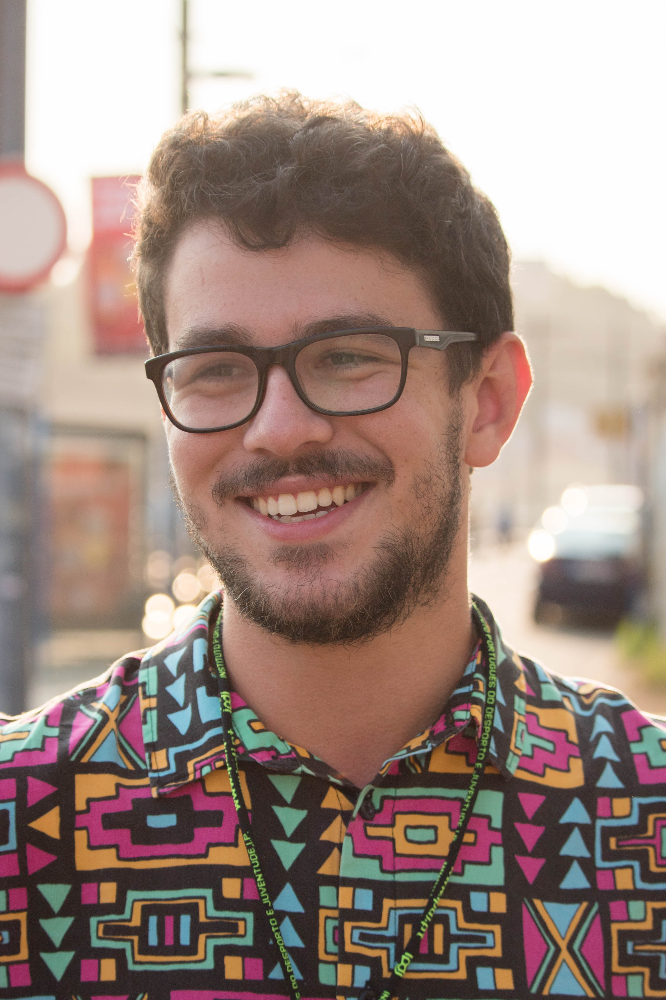

About Me

Hello.
My name is Pedro Oliveira and I’m an aspiring Graphic Designer from Portugal, currently living in Bournemouth.
I’m undertaking a BA (Hons) in Graphic Design at the Arts University Bournemouth, where I’m continuously building up on my design skill set. My interests range from Publication Layout to Web Design, with a focus on Motion Graphics - the area I’m planning to specialise in.
Besides my professional design career, I’m heavily interested in event planning and branding, European politics and volunteering. I’m an active member of the European Youth Parliament, an international volunteering platform that provides me with a place to voice my opinions, develop leadership skills and ultimately expand my design knowledge, by trying out different media concepts on mostly non-creative, culturally diverse audiences.
I’ve chosen this professional area, as I’ve always looked at the world in a visual way, sensing unbalances and incongruities in my surroundings; small aspects of urban elements that ultimately affected wayfinding. This is something that I hope to impact the world in, as I believe that the main purpose of Graphic Design is to make people’s lives easier.
Recently, I had my first meaningful contact with the industry. AUB offered me the chance to work on a brief by the local design company Fireworx for Health-on-Line. It was an absolute pleasure to work on this project, as I’ve received important feedback and learned how to approach industry professionals. Our solution for the brief was received with great excitement, ultimately being deemed as relevant and feasible.
My name is Pedro Oliveira and I’m an aspiring Graphic Designer from Portugal, currently living in Bournemouth.
I’m undertaking a BA (Hons) in Graphic Design at the Arts University Bournemouth, where I’m continuously building up on my design skill set. My interests range from Publication Layout to Web Design, with a focus on Motion Graphics - the area I’m planning to specialise in.
Besides my professional design career, I’m heavily interested in event planning and branding, European politics and volunteering. I’m an active member of the European Youth Parliament, an international volunteering platform that provides me with a place to voice my opinions, develop leadership skills and ultimately expand my design knowledge, by trying out different media concepts on mostly non-creative, culturally diverse audiences.
I’ve chosen this professional area, as I’ve always looked at the world in a visual way, sensing unbalances and incongruities in my surroundings; small aspects of urban elements that ultimately affected wayfinding. This is something that I hope to impact the world in, as I believe that the main purpose of Graphic Design is to make people’s lives easier.
Recently, I had my first meaningful contact with the industry. AUB offered me the chance to work on a brief by the local design company Fireworx for Health-on-Line. It was an absolute pleasure to work on this project, as I’ve received important feedback and learned how to approach industry professionals. Our solution for the brief was received with great excitement, ultimately being deemed as relevant and feasible.